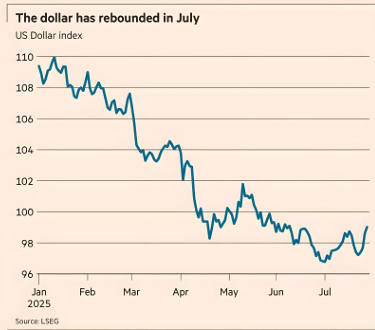
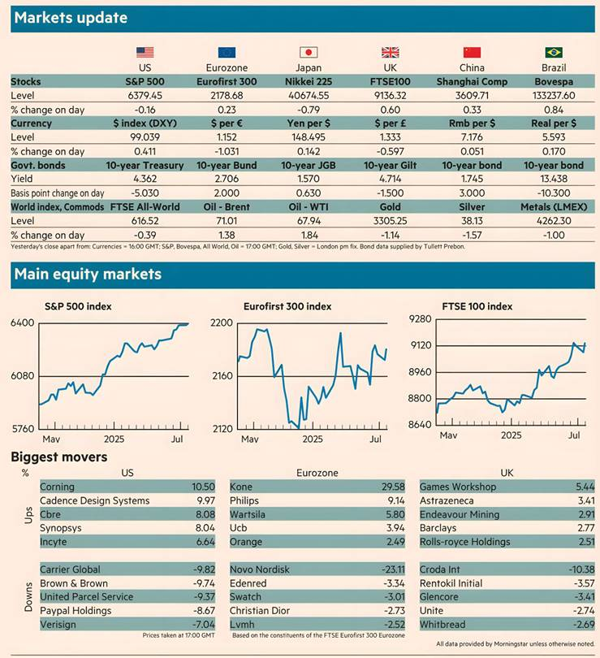

What you need to know
Wall Street slipped from record highs and the dollar climbed yesterday as investors awaited a week of key corporate earnings, a string of important economic data, and a US Federal Reserve meeting.
The blue-chip S&P 500 index was down 0.2 per cent by early afternoon in New York after giving up small early gains, while the tech-heavy Nasdaq Composite fell 0.3 per cent.
The Fed yesterday began its two-day policy meeting and will give an update on benchmark interest rates today. Investors are expecting the central bank to hold rates steady at 4.25-4.50 per cent but will be listening closely for signals about how the Fed is weighing the early signs of inflation from President Donald Trump's tariffs.
Markets are also waiting for heavyweight corporate results with the “Magnificent Seven” megacap stocks — Meta and Microsoft reporting today, and Apple and Amazon updating tomorrow.
The US Dollar Index, which measures the strength of the currency against a basket of rivals, reached its highest level for five weeks, rising 0.4 per cent. The dollar has rebounded this month — particularly against the euro — following a series of US trade deals that have eased investor concerns about a full-blown global trade war.
“The short dollar trade is still a very consensus view, but the more US equities rally and the more asset managers are drawn back into the US markets after rotating some assets out in the first half of the year, the harder it is for the dollar to fall,” said Brad Bechtel, global head of FX at Jefferies.
The euro slid 0.5 per cent against the dollar to its lowest level for a month, taking its losses since the weekend’s US-EU tariff deal to 1.8 per cent.
However, European stocks moved higher, largely reversing Monday’s losses. The pan-regional Stoxx Europe 600 index closed up 0.3 per cent, Frankfurt’s Xetra Dax rose 1 per cent and Paris’s Cac 40 advanced 0.7 per cent.
Eurozone investors were also waiting for important GDP and inflation figures this week for clues about how the economy is weathering the early impact of tariffs from the US.
In London, the benchmark FTSE 100 index firmed 0.6 per cent.
US government debt rallied after data on American consumer confidence was stronger than expected. Yields on 10-year US Treasuries fell 6 basis points to 4.56 per cent as investors snapped up the debt.